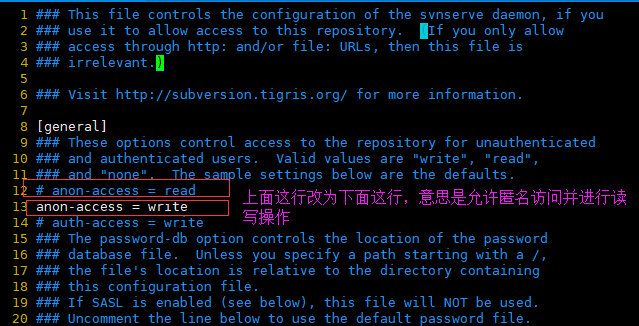

先创建两个工作目录模拟两个工作人员
mkdir -p /home/workspace/harry
mkdir -p /home/workspace/sally
分别进入到上面两个工作区去检出svn版本库中的项目，涉及命令svn checkout
cd /home/workspace/harry
svn checkout svn://127.0.0.1:3690/pro_erp ./
cd /home/workspace/sally
svn checkout svn://127.0.0.1:3690/pro_erp ./
说明一下：上面的svn：//127.0.0.1:3690/pro_erp是在svn版本库中项目的路径，./表示将svn版本库中的项目检出到当前的路径中
检出操作完成之后，会在工作区下面看到.svn这个隐藏文件，这个就是所谓的“svn工作副本”，这个文件一定不要删除或者修改
上传文件到svn版本库中，涉及命令svn commit
首先修改svn版本库中的svnserve.conf文件允许匿名访问并可以读写

进入到harry的工作目录中：cd /home/workspace/harry
新建一个文件并写入一些内容：vim hello.txt
将文件纳入版本控制体系中：svn add hello.txt
提交文件到版本库中：svn commit -m "my first commit" hello.txt
更新操作，涉及命令svn update
进入到sally的工作目录中：cd /home/workspace/sally
更新：svn update